Hey, it's Ahmed.
|
An Odoo and .NET developer with 3+ years of software engineering across regulated healthcare, banking, and ERP — including two years keeping an NHS Wales system serving 3.6M+ clinical records running with zero critical incidents, and now building Odoo modules at an Odoo Gold Partner.
Where the two sides meet
- ASP.NET Core, .NET 8, C#
- NHS-grade production systems
- Oracle Fusion SCM, OIC
- PL/SQL, BI Publisher
- Odoo ORM, QWeb, custom modules
- LLM integration, agentic architecture
- FastAPI automation
- Angular, React front ends
The connecting thread is correctness under constraint: healthcare data doesn't forgive shortcuts, and neither do autonomous agents or ERP workflows left unsupervised. Same verification habits, applied across all of it.
Where I've worked
Present
Remote
(Riyadh, KSA)
ERP/Odoo Developer
Delivered 14 customisations across 6 enterprise client projects in Python, XML views and QWeb, covering purchase, accounting, sales and inventory workflows, in a remote, distributed delivery team.
Apr 2026
Cairo, Egypt
Oracle Technical Consultant
Training programme across Oracle Integration Cloud, PL/SQL, Oracle Fusion HCM/SCM and BI Publisher, finishing with an end-to-end OIC inventory integration — the enterprise integration layer most regional dev profiles skip entirely.
Dec 2025
Cardiff, UK
Software Developer
Owned and maintained RadIS, an enterprise radiology information system serving 3.6M+ clinical records across multiple NHS health boards, using .NET Core and SQL-based backend services within a Cyber Essentials Plus certified architecture. Modernized the platform with reusable Angular components, delivered a zero-downtime SQL Server to PostgreSQL migration, and standardized Docker deployments across seven environments via Azure DevOps CI/CD. Wrote 200+ xUnit tests gating the pipeline and implemented role-based access by clinician role and health board.
Sep 2022
Cairo, Egypt
Frontend Developer
Built production-grade consumer banking interfaces with React.js integrated against secure RESTful banking APIs, and established a systematic Postman-based API testing process to reduce production defect rates.
Key projects
Odoo 20 Hospital Management Module
A custom Odoo 20 module with 14 models plus extensions of hr.employee, sale.order, res.partner and product: patient registration, appointments, clinical records and inpatient admissions with beds and transfers. Patients live on Odoo contacts via _inherits, company-contract billing splits each bill between company and patient, and doctor scheduling, bed allocation and record locking are enforced by SQL and Python constraints. Secured with record rules, three QWeb PDF reports, Arabic translation (~420 terms), trigram and partial indexes, and a 57-test TransactionCase suite.
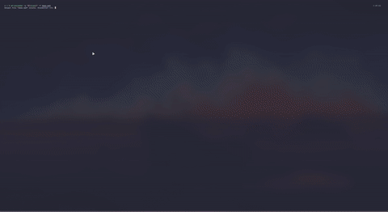

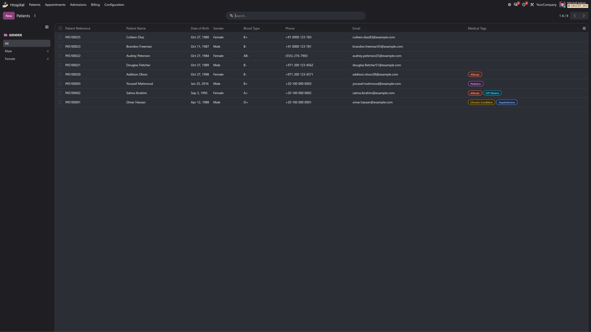
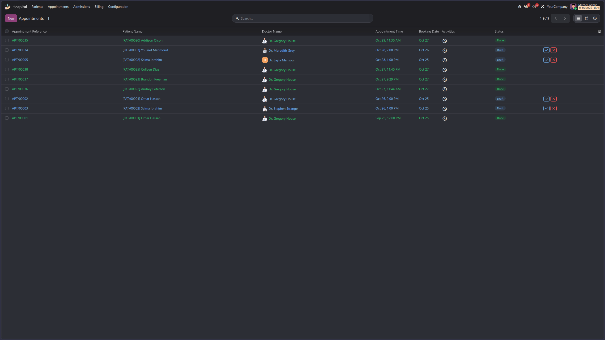
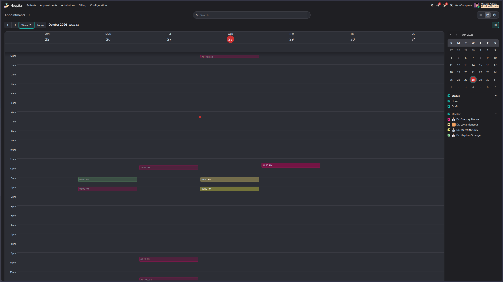
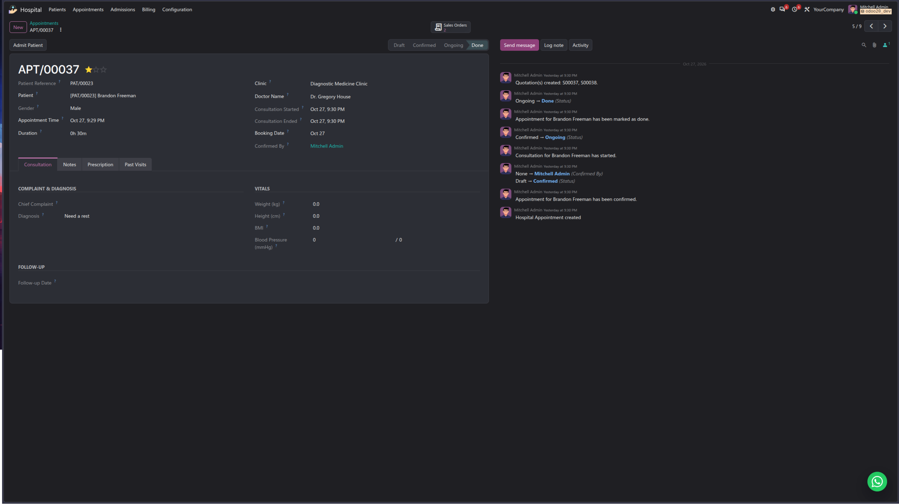
Clinical Appointments API
A portfolio API in .NET 8 for clinic appointment booking: Clean Architecture with CQRS, PostgreSQL with overlap-free scheduling enforced at the database level, JWT authentication with role- and resource-based authorisation, Redis-cached availability, Azure Service Bus events, and xUnit + Testcontainers tests. Docker and GitHub Actions CI planned. Synthetic data only.
OIC Inventory Integration
An end-to-end Oracle Integration Cloud flow: extracts completed inventory transactions from Oracle Fusion through a SOAP BI report, stores and queries them in ATP, validates on-hand quantities through Fusion REST, conditionally creates miscellaneous receipts and inter-org transfers, and logs every result to ATP — across SOAP, REST, database and business-logic layers.
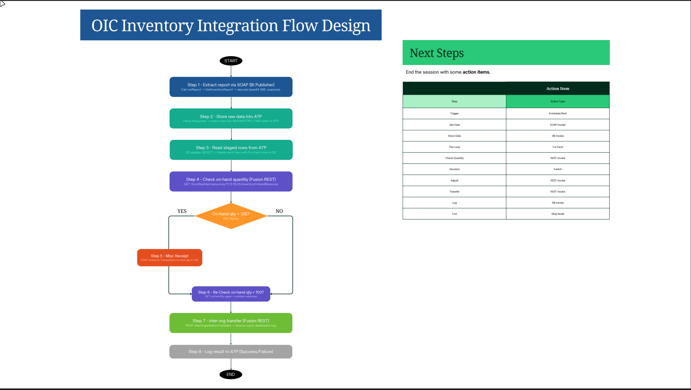
RadIS Go — High-Performance Patient Search
A clinical search engine delivering sub-second queries across 1M+ patient records, with a JavaScript front end powered by Go backend services integrating radiology and clinical REST APIs.
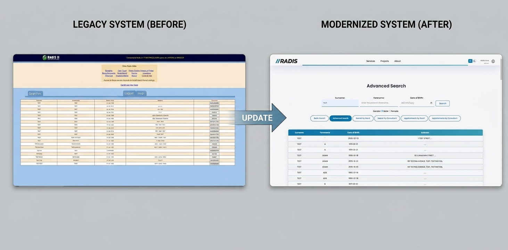
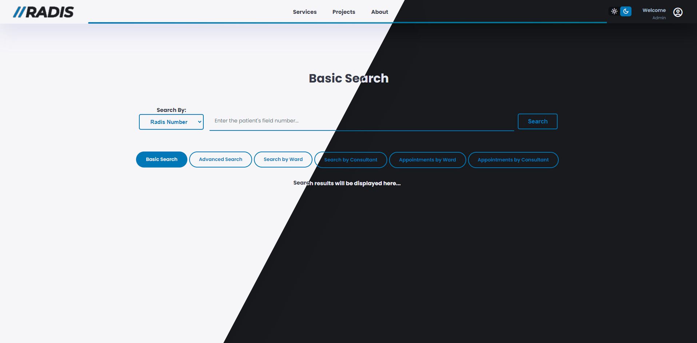
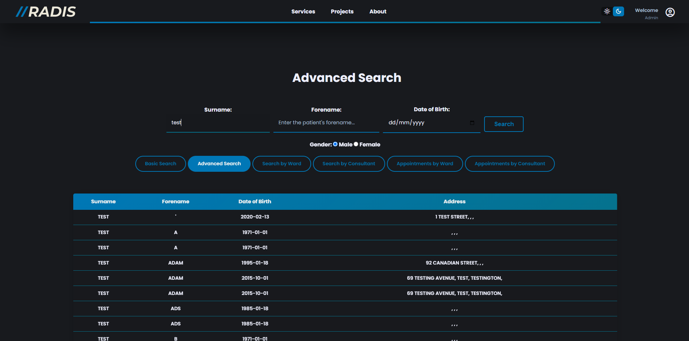
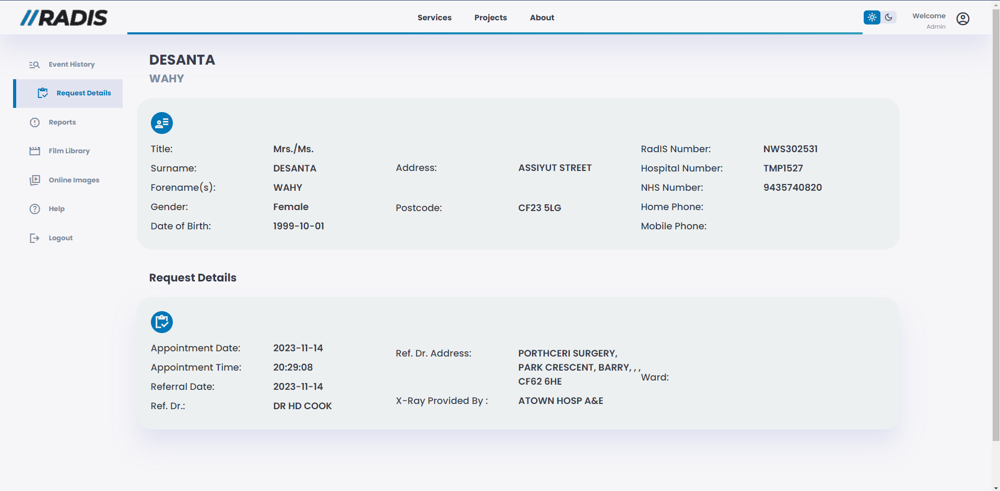
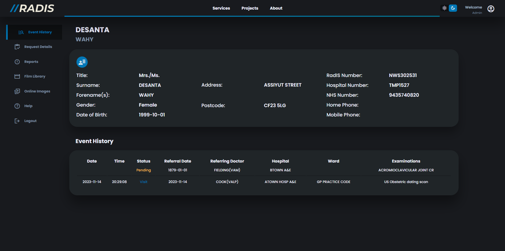
Enterprise Emergency Department Module
An MVC web application digitizing ED patient intake and triage workflows, built with Angular and .NET Core, using reusable component libraries and real-time REST synchronization across clinical teams.
UniCertify — Blockchain Document Verification
A full-stack platform issuing and verifying tamper-proof academic certificates using Solidity smart contracts on Ethereum with IPFS decentralized storage — Swansea University dissertation project, graded First Class.
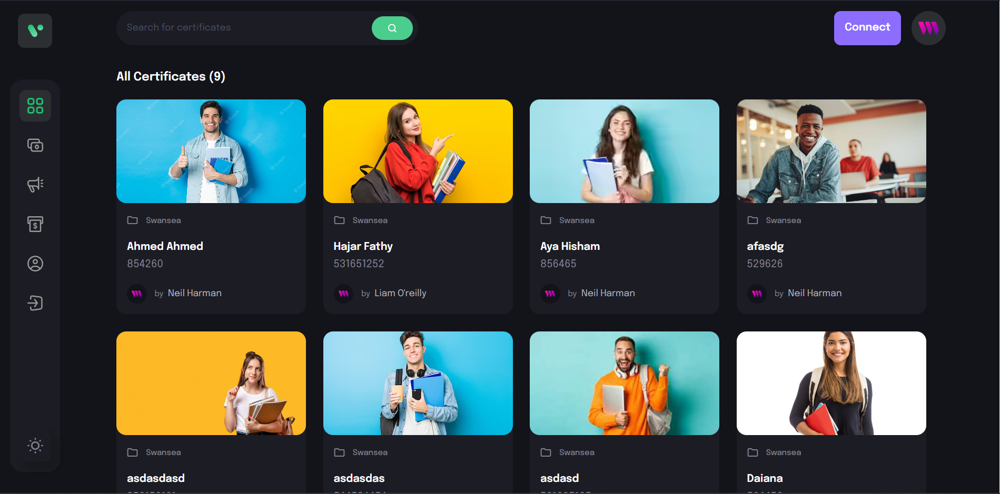

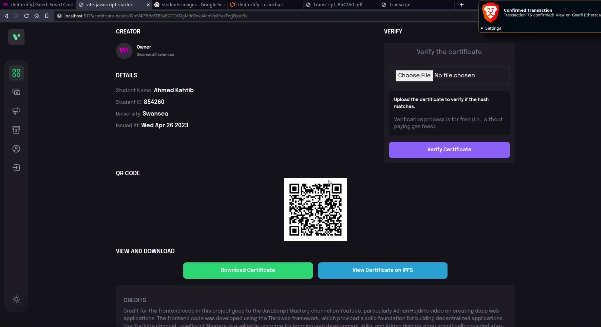
WizSpells
A bilingual Arabic/English Discord RPG for an Egyptian Harry Potter–themed community — character systems, spell mechanics, dueling, and progression, with admin tooling built alongside it.
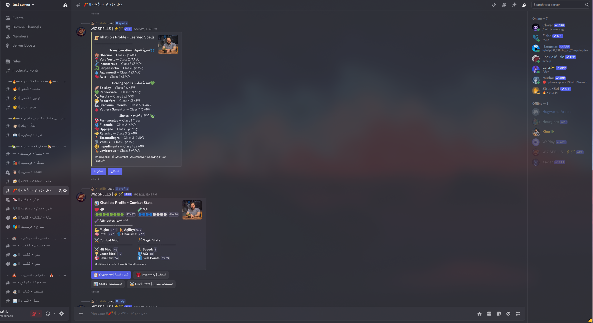
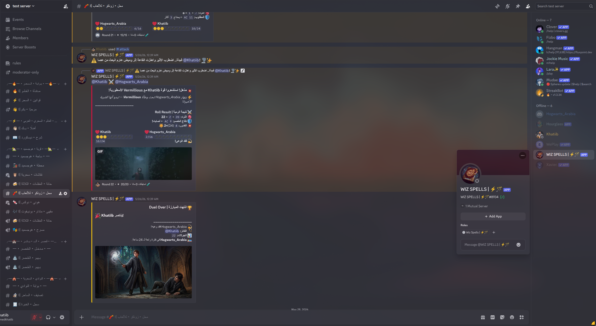
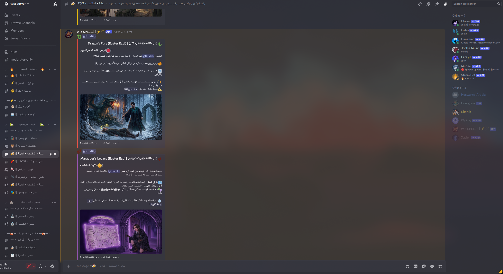
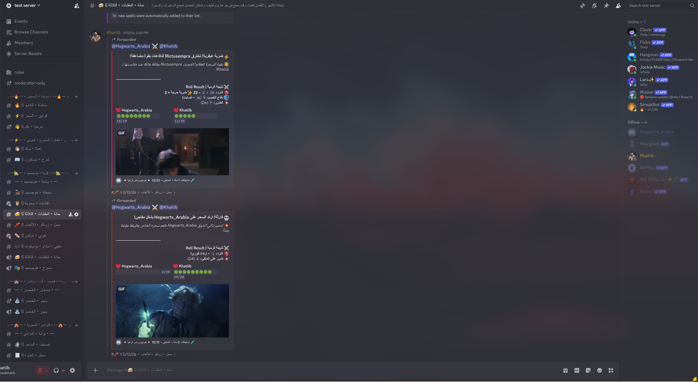
Full range
Let's talk
Open to ERP/Odoo and Oracle integration roles across Egypt and the Gulf, plus global opportunities where the .NET and applied-AI experience is the better fit.